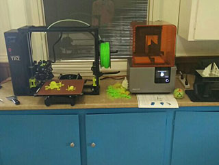

Origin Makerspace Home
Welcome to Origin
Origin makerspace is a resource members can use to gain access to equipment otherwise to costly. Both long time members or one time drop-ins will gain acess to the equipment and skills nessisary to make your creativity a reality with the help of our mentors and like minded makers!
We provide both a creative outlet for the more practiced creator or a cheaper alternative to ordering from online printing shops. There's always something interesting being worked on, so stop by and take a look!
Community Creations
A matting part to a dog training whistle, clicks in to place and makes it surprizingly louder! After being printed with the form labs was taken to be mold cast and sold as an acessory to said whistle, and was never heard from again.
CreatorA medal commissioned for the "World tubing championship" fundraiser for the St. Thomas hospital renovation fundraiser. 16 Medals were created and haded out to medal placers in the fundraisers games.
CreatorA tree topper commissioned for Fanshawe St Thomas Elgin Regional Campus. One went on each of their three trees and orniments were put in extra space while printing stars. Designing ornaments was an experience offered to students looking to try some entry level design!
Creator